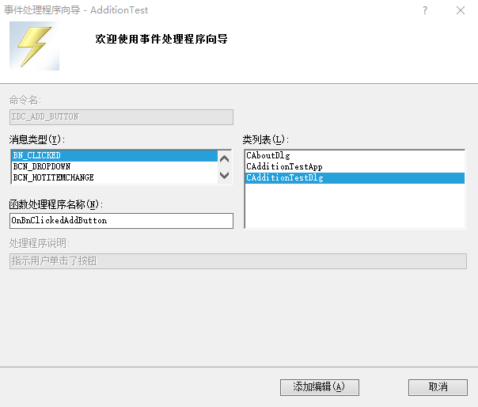

# 创建对话框

- 创建对话框资源，添加控件。
- 创建对话框类，添加控件变量，添加控件的消息处理函数。
添加控件变量时，类的成员变量一般以 m 开头，标识它是一个成员变量。
# 对话框类的数据交换和检验
在程序运行界面中，用户往往会改变控件的属性，例如在编辑框中输入字符串，或者改变组合框中的选中项，又或者改变复选框的选中状态等。
控件的属性改变后，MFC 会相应的修改控件关联变量的值。这种同步的改变是通过 MFC 为对话框类自动生成的成员函数 DoDataExchange () 函数实现的，这也叫做对话框的数据交换和检验机制。
为三个编辑框添加了变量之后，在 AdditionTestDlg.cpp 中 CAdditionTestDlg::DoDataExchange() 函数的函数体中多了三条 DDX_Text 调用语句。
void CAdditionTestDlg::DoDataExchange(CDataExchange* pDX) | |
{ | |
// 处理 MFC 默认的数据交换 | |
CDialogEx::DoDataExchange(pDX); | |
// 处理控件 IDC_SUMMAND_EDIT 和变量 m_editSummand 之间的数据交换 | |
DDX_Text(pDX, IDC_SUMMAND_EDIT, m_editSummand); | |
// 处理控件 IDC_ADDEND_EDIT 和变量 m_editAddend 之间的数据交换 | |
DDX_Text(pDX, IDC_ADDEND_EDIT, m_editAddend); | |
// 处理控件 IDC_SUM_EDIT 和变量 m_editSum 之间的数据交换 | |
DDX_Text(pDX, IDC_SUM_EDIT, m_editSum); | |
} |
数据交换机制：
如果在程序运行界面中输入被加数，通过
CAdditionTestDlg的DoDataExchange()函数可以将输入的值保存到m_editSummand变量中；反之，如果程序运行中修改了变量m_editSummand的值，则通过CAdditionTestDlg的DoDataExchange()函数也可以将新的变量值显示到被加数的编辑框中。但这种数据交换机制中，DoDataExchange () 函数并不是自动调用的，而是需要我们在程序中调用 CDialogEx::UpdateData () 函数，由 UpdateData () 再去自动调用 DoDataExchange ()
CDialogEx::UpdateData() 函数原型：
BOOL UpdateData(BOOL bSaveAndValidate = TRUE); |
- 参数
bSaveAndValidate用于指示数据传输的方向，TRUE表示从控件传给变量，FALSE表示从变量传给控件。默认为TRUE，从控件传给变量。 - 返回值表示操作是否成功。
# 为对话框控件添加消息处理函数
# 预处理器 AFX_DESIGN_TIME
#ifdef AFX_DESIGN_TIME
enum { IDD = IDD_LOGIN_DIALOG };
#endif
类向导使用它来将对话框 ID（ IDD_LOGIN_DIALOG ）映射到对话框类（派生自 CDialogEx）
删除掉这部分，程序可以正常编译，但类向导不能再正常工作，无法读取到类中的成员函数。
// 旧版本的 Visual Studio 中，对话框类的构造函数如下： | |
CAdditionTestDlg::CAdditionTestDlg(CWnd* pParent /*=NULL*/) | |
: CDialogEx(CAdditionTestDlg::IDD, pParent) | |
{ | |
} | |
//CAdditionTestDlg::IDD 编译时实际使用了符号，没有 #ifdef AFX_DESIGN_TIME | |
// 新版本的 Visual Studio 中，对话框类的构造函数如下： | |
LoginDlg::LoginDlg(CWnd* pParent /*=nullptr*/) | |
: CDialogEx(IDD_LOGIN_DIALOG, pParent) | |
{ | |
} | |
#ifdef AFX_DESIGN_TIME | |
enum { IDD = IDD_LOGIN_DIALOG }; | |
#endif |
# 添加消息处理函数
-
使用类向导添加消息处理函数

-
通过资源视图 “Add Event Handler…” 添加消息处理函数
在按钮控件上点击右键进入

-
在控件的属性视图中添加消息处理函数

-
双击控件添加消息处理函数
最直接最简单的方法，双击 “计算” 按钮，MFC 会自动为其在 CAdditionDlg 类中添加
BN_CLICKED消息的处理函数OnBnClickedAddButton()


# 在消息处理函数中添加自定义功能
添加消息处理函数之后，得到一个空的 OnBnClickedAddButton() 函数的函数体，要实现我们想要的功能，还需要在函数体中加入自定义功能代码。
要实现加法功能：获取被加数和加数的数值，然后计算他们的和并显示到和的编辑框里。函数体为：
void CAdditionTestDlg::OnBnClickedAddButton() | |
{ | |
// TODO: 在此添加控件通知处理程序代码 | |
// 将各控件中的数据保存到相应的位置 | |
UpdateData(TRUE); | |
// 将被加数和加数的和赋值给 m_editSum | |
m_editSum = m_editSummand + m_editAddend; | |
// 根据各变量的值更新相应的控件。和编辑框会显示 m_editSum 的值 | |
UpdateData(FALSE); | |
} |
# 设置控件的 Tab 顺序
- Ctrl+D
- 主菜单 ->format->tab order
# 模态与非模态对话框及其弹出过程
-
模态对话框
弹出后，本应用程序其他窗口不再接受用户输入，只有该对话框相应用户输入，在对他进行操作退出后，其他窗口才能继续与用户交互。
-
非模态对话框
弹出后，本应用程序其他窗口仍能相应用户输入。非模态对话框一般用来显示提示信息等。
-
对话框是怎么弹出的？
应用程序 App 类实例的初始化工作由
CAdditionTestApp::InitInstance()实现其中后半段有定义对话框对象并弹出对话框：
p CAdditionTestDlg dlg; // 定义对话框类 CAdditionDlg dlg
m_pMainWnd = &dlg; // 将 dlg 设置为主窗口
INT_PTR nResponse = dlg.DoModal(); // 弹出对话框 dlg，并将 DoModal 函数返回值（退出时点击按钮的 ID）赋值给 nResponse
if (nResponse == IDOK) // 判断返回值是否为 OK 按钮（其 ID 为 IDOK，已删除）
{// TODO: “确定” 来关闭对话框的代码}else if (nResponse == IDCANCEL) // 判断返回值是否为 Cancel 按钮（其 ID 为 IDCANCEL，退出按钮）
{// TODO: “取消” 来关闭对话框的代码}弹出对话框比较关键的一个函数，就是对话框类的 DoModal () 函数。
CDialog::DoModal()函数的原型为：p virtual INT_PTR DoModal();
- 返回值：整数值，指定了传递给
CDialog::EndDialog（该函数用于关闭对话框）的nResult参数值。如果不能创建对话框，则返回-1；如果出现其他错误，则返回IDABORT - 调用了它对话框就会弹出，返回值是退出对话框时所点的按钮的 ID，比如，点击 “退出” 按钮，那么
DoModal返回值就是IDCANCEL
- 返回值：整数值，指定了传递给
# 添加模态对话框并弹出它
-
右键资源文件中 “Dialog” 文件夹，插入 Dialog，创建一个新的对话框模板
设置 ID 为
IDD_TIP_DIALOG，Caption 为 “提示 “ -
在对话框模板上右键选择 Add Class… 添加对话框类
设置 "class name" 为 CTipDlg，在 Solution Explorer 中生成 TipDlg.h 和 TipDlg.cpp.
-
要在点” 计算 “按钮之后弹出此提示对话框，那么就要在” 计算 “按钮的消息处理函数
OnBnClickedAddButton()中访问提示对话框类。所以为了访问 CTipDlg 类，在 AdditionTestDlg.cpp 中包含 CTipDlg 的头文件#include "TipDlg.h" -
修改
OnBnClickedAddButton()的函数体，在所有代码之前，构造 CTipDlg 类的对象 tipDlg，并通过语句tipDlg.DoModal();弹出对话框，最后判断DoModal()函数的返回值是IDOK还是IDCANCEL来确定是否继续进行计算。p void CAdditionTestDlg::OnBnClickedAddButton()
{// 用于保存 DoModal 函数的返回值INT_PTR nRes;// 构造对话框类 CTipDlg 的实例CTipDlg tipDlg;// 弹出对话框nRes = tipDlg.DoModal();
// 判断对话框退出后返回值是否为 IDCANCEL，如果是则 return, 否则继续向下执行if (IDCANCEL == nRes)
return;
// 将各控件中的数据保存到相应的位置UpdateData(TRUE);
// 将被加数和加数的和赋值给 m_editSumm_editSum = m_editSummand + m_editAddend;
// 根据各变量的值更新相应的控件。和编辑框会显示 m_editSum 的值UpdateData(FALSE);
} -
测试
# 添加非模态对话框并显示
非模态对话框显示后，程序其他窗口仍然能正常运行，可以响应用户输入，还可以相互切换。
实际上，模态和非模态对话框在创建对话框资源和生成对话框类上是没有区别的。
需要修改的是，对话框类实例的创建和显示，也就是在 CAdditionTestDlg::OnBnClickedAddButton() 函数体中添加的对话框显示代码。具体步骤：
-
在 AdditionTestDlg.h 中包含 CTipDlg 头文件并定义 CTipDlg 类型的指针成员变量。
删除
AdditionTestDlg.cpp中包含的#include "TipDlg.h"，而在AdditionTestDlg.h中包含#include "TipDlg.h"，因为我们要在AdditionTestDlg.h中定义 CTipDlg 类型的指针变量，所以要先包含它的头文件；然后在AdditionTestDlg.h中为 CAdditionTestDlg 类添加 private 成员变量CTipDlg *m_pTipDlg; -
在
CAdditionTestDlg类的狗在函数中初始化成员变量m_pTipDlg(NULL) -
修改
CAdditionTestDlg::OnBnClickedAddButton()函数p void CAdditionTestDlg::OnBnClickedAddButton()
{// TODO: 在此添加控件通知处理程序代码// 模态对话框/*INT_PTR nRes; // 用于保存 DoModal 函数的返回值
CTipDlg tipDlg; // 构造对话框类 CTipDlg 的实例
nRes = tipDlg.DoModal (); // 弹出对话框
if (IDCANCEL == nRes) // 判断对话框退出后返回值是否为 IDCANCEL，如果是则 return, 否则继续向下执行
return;
*/
// 非模态对话框// 动态创建对话框if (m_pTipDlg == NULL){
// 创建非模态对话框实例m_pTipDlg = new CTipDlg();
m_pTipDlg->Create(IDD_TIP_DIALOG, this);
}// 显示非模态对话框m_pTipDlg->ShowWindow(SW_SHOW);
// 将各控件中的数据保存到相应的位置UpdateData(TRUE);
// 将被加数和加数的和赋值给 m_editSumm_editSum = m_editSummand + m_editAddend;
// 根据各变量的值更新相应的控件。和编辑框会显示 m_editSum 的值UpdateData(FALSE);
} -
因为此对话框实例是动态创建的，所以需要手动删除动态对象来销毁对话框。我们在 CAdditionTestDlg 类的析构函数中添加删除代码。
p CAdditionTestDlg::~CAdditionTestDlg()
{// 如果非模态对话框已经创建则删除它if (m_pTipDlg != NULL){
delete m_pTipDlg;
}} -
测试。
# 属性页对话框及其相关类
右键点属性弹出的对话框，通过标签切换各个界面。
主要用到的类：CPropertyPage 类和 CPropertySheet 类。
-
CPropertyPage 类
CPropertyPage 类继承自 CDialog 类，它被用于处理某单个属性页，所以要为每个属性页都创建一个继承自 CPropertyPage 类的子类
-
构造函数
// 第一个是没有任何参数的构造函数。CPropertyPage();
// 第二个构造函数中，参数 nIDTemplate 是属性页的对话框资源 ID，参数 nIDCaption 是属性页对话框选项卡的标题所用字符串资源的 ID，若设为 0，则选项卡标题就使用该属性页的对话框资源的标题。explicit CPropertyPage(
UINT nIDTemplate,UINT nIDCaption = 0,
DWORD dwSize = sizeof(PROPSHEETPAGE)
);
// 第三个构造函数中，参数 lpszTemplateName 为属性页的对话框资源的名称字符串，不能为 NULL。参数 nIDCaption 同上。explicit CPropertyPage(
LPCTSTR lpszTemplateName,UINT nIDCaption = 0,
DWORD dwSize = sizeof(PROPSHEETPAGE)
);
-
CancelToClose()函数在模态属性页对话框的属性页进行了某不可恢复的操作后，使用
CancelToClose()函数将 “OK” 按钮改为 “Close” 按钮，并禁用 “Cancel” 按钮。函数原型为：p void CancelToClose( );
-
SetModified()函数调用此函数可激活或禁用 “Apply” 按钮，函数原型为：
p void SetModified(BOOL bChanged = TRUE);
-
可重载函数
CPropertyPage 类提供了一些消息处理函数，来响应属性页对话框的各种消息。我们重载这些消息处理函数，就可以自定义对属性页对话框操作的处理。可重载的消息处理函数包括：
OnApply：处理属性页的 “Apply” 按钮被单击的消息OnCancel：处理属性页的 “Cancel” 按钮被单击的消息OnKillActive：处理属性页当前活动状态被切换的消息，常用于数据验证OnOK：处理属性页的 “OK” 按钮、“Apply” 按钮或者 “Close” 按钮被单击的消息OnQueryCancel：处理属性页的 “Cancel” 按钮被单击前发出的消息OnReset：处理属性页的 “Reset” 按钮被单击的消息OnSetActive：处理属性页被切换为当前活动页的消息OnWizardBack：处理属性页的 “Back” 按钮被单击的消息，仅在向导对话框中有效OnWizardFinish：处理属性页的 “Finish” 按钮被单击的消息，仅在向导对话框中有效OnWizardNext：处理属性页的 “Next” 按钮被单击的消息，仅在向导对话框中有效
-
-
CPropertySheet类CPropertySheet类继承自CWnd类，它是属性表类，负责加载、打开或删除属性页，并可以在属性页对话框中切换属性页，和对话框类似有模态和非模态两种。-
构造函数
p CPropertySheet( );
explicit CPropertySheet(
UINT nIDCaption,CWnd* pParentWnd = NULL,
UINT iSelectPage = 0
);
explicit CPropertySheet(
LPCTSTR pszCaption,CWnd* pParentWnd = NULL,
UINT iSelectPage = 0
);
- 参数
nIDCaption：标题的字符串资源的 ID。 - 参数
pParentWnd：属性页对话框的父窗口，若设为 NULL，则父窗口为应用程序的主窗口。 - 参数
iSelectPage：初始状态时，活动属性页的索引，默认为第一个添加到属性表的属性页。 - 参数
pszCaption：标题字符串。
- 参数
-
GetActiveIndex()函数获取当前活动属性页的索引。函数原型为：
p int GetActiveIndex( ) const;
- 返回值：当前活动属性页的索引。
-
GetActivePage()函数获取当前活动属性页对象。函数原型为：
p CPropertyPage* GetActivePage( ) const;
- 返回值：当前活动属性页对象的指针。
-
GetPage()函数获取某个属性页对象。函数原型为：
p CPropertyPage* GetPage(int nPage) const;
- 参数
nPage：目标属性页的索引。 - 返回值：目标属性页对象的指针。
- 参数
-
GetPageCount()函数获取属性页的数量。函数原型为：
p int GetPageCount( ) const;
-
GetPageIndex()函数获取某属性页在属性页对话框中的索引。函数原型为：
p int GetPageIndex(CPropertyPage* pPage);
- 参数
pPage：要获取索引的属性页对象的指针。 - 返回值：属性页对象在属性页对话框中的索引。
- 参数
-
SetActivePage()函数设置某个属性页为活动属性页。函数原型为：
p BOOL SetActivePage(int nPage);
BOOL SetActivePage(CPropertyPage* pPage);
- 参数
nPage：要设置为活动属性页的索引。 - 参数
pPage：要设置为活动属性页的对象指针。
- 参数
-
SetWizardButtons()函数在向导对话框上启用或禁用 Back、Next 或 Finish 按钮，应在调用 DoModal 之前调用此函数。函数原型为：
p void SetWizardButtons(DWORD dwFlags);
参数
dwFlags：设置向导按钮的外观和功能属性。可以是以下值的组合：- PSWIZB_BACK 启用 “Back” 按钮，如果不包含此值则禁用 “Back” 按钮。
- PSWIZB_NEXT 启用 “Next” 按钮，如果不包含此值则禁用 “Next” 按钮。
- PSWIZB_FINISH 启用 “Finish” 按钮。
- PSWIZB_DISABLEDFINISH 显示禁用的 “Finish” 按钮。
-
SetWizardMode()函数设置属性页对话框为向导对话框模式，应在调用 DoModal 之前调用此函数。函数原型为：
p void SetWizardMode( );
-
SetTitle()函数设置属性对话框的标题。函数原型为：
p void SetTitle(
LPCTSTR lpszText,UINT nStyle = 0
);
-
参数
lpszText：标题字符串。 -
参数
nStyle：指定属性表标题的风格。应当为 0 或 PSH_PROPTITLE。如果设为 PSH_PROPTITLE，则单词 “Properties” 会出现在指定标题之后。例如，
SetTitle("Simple",PSH_PROPTITLE)这种调用会使得属性表标题为 “Simple Properties”。
-
-
AddPage()函数为属性对话框添加新的属性页。函数原型为：
p void AddPage(CPropertyPage *pPage);
参数
pPage：要添加的新的属性页的对象指针。 -
PressButton()函数模拟按下某指定的按钮。函数原型为
p void PressButton(int nButton);
参数
nButton：要模拟按下的按钮，它可以是下列值之一：- PSBTN_BACK 选择 “Back” 按钮。
- PSBTN_NEXT 选择 “Next” 按钮。
- PSBTN_FINISH 选择 “Finish” 按钮。
- PSBTN_OK 选择 “OK” 按钮。
- PSBTN_APPLYNOW 选择 “Apply” 按钮。
- PSBTN_CANCEL 选择 “Cancel” 按钮。
- PSBTN_HELP 选择 “帮助” 按钮。
-
RemovePage()函数删除某属性页。函数原型为：
p void RemovePage(CPropertyPage *pPage);
void RemovePage(int nPage);
- 参数
pPage：要删除的属性页的对象指针。 - 参数
nPage：要删除的属性页的索引。
- 参数
-